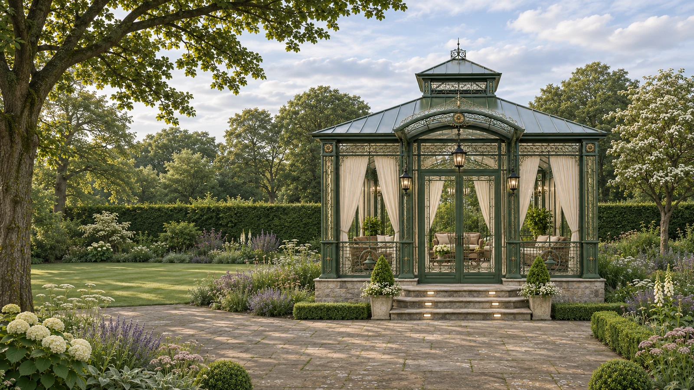
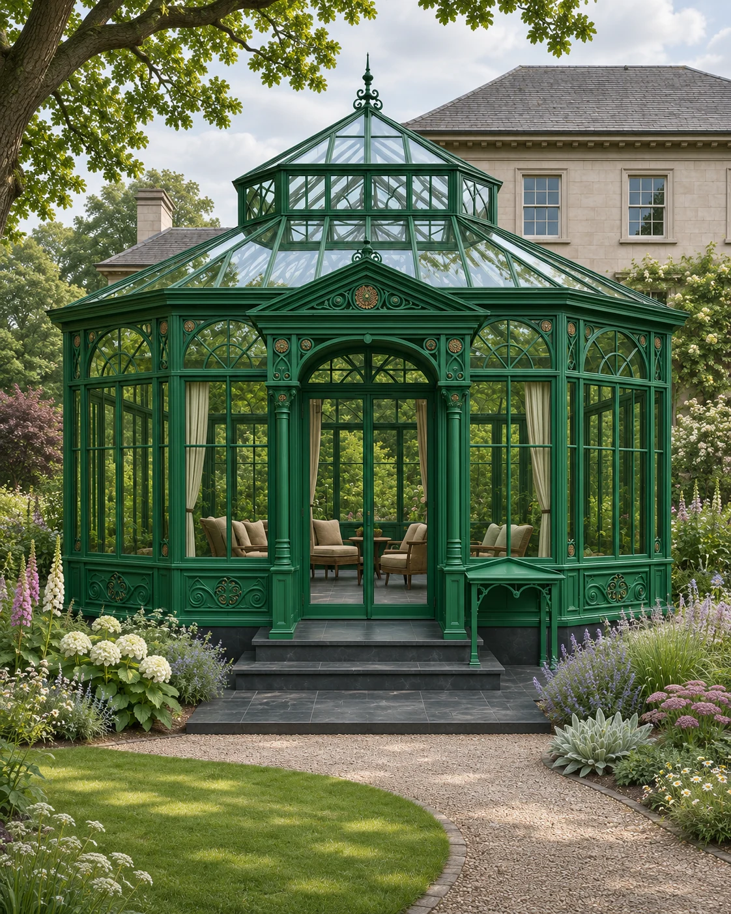
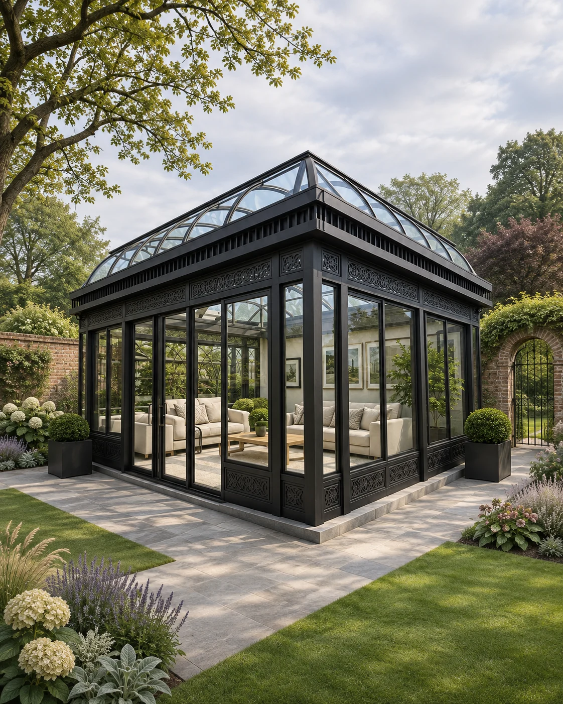

14 design families
Classical Garden Pavilions
Arched glazing, ornamental rooflines and distinctive garden entrances. Compare pale, grey and dark architectural frames, with different roof forms and glazing rhythms.
Explore designs ↗
The design collection
Design visualisation
Explore classical conservatories, glazed garden pavilions, ornamental gazebos and quieter contemporary rooms. Compare the roof forms, frame colours and architectural details, then open a design to see its reference views.
41 design families
14 design families
Arched glazing, ornamental rooflines and distinctive garden entrances. Compare pale, grey and dark architectural frames, with different roof forms and glazing rhythms.
Explore designs ↗
10 design families
Raised roof lanterns, domed glazing and green garden structures. Explore the shape of the roof, the approach to the entrance and the way each design sits within the planting.
Explore designs ↗
3 design families
Open lattice domes, covered canopies and curtained garden seating. Compare how much enclosure you want and which roof form belongs in your garden.
Explore designs ↗
8 design families
Quieter frames, broad glazed elevations and a closer relationship to the terrace. Explore pitched glass rooms, attached arrangements and architectural design boards.
Explore designs ↗
4 design families
Barrel roofs, rounded bays and tall arched garden elevations. Compare the roof curve with the rhythm of the glazing and the proportions of the entrance.
Explore designs ↗
2 design families
Long glazed elevations and ornamental covered edges beside the house. Explore the relationship between an existing façade, the garden path and terrace seating.
Explore designs ↗The collection presents architectural design references. Roof shape, glazing, frame finish and enclosure create different experiences of the garden. Use the images to explain the direction you are drawn to; your own layout and specification are developed for the setting and intended use.
Explore bespoke conservatories for London homes, compare glass garden pavilions or consider open-sided ornamental gazebos.
Your next space
Share the setting, the way you want to use the space and the designs you are drawn to.
Plan your project